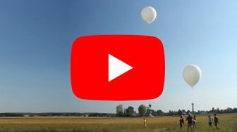

Participation aux mission d'échantillonage de l'air par ballon
Intervention terrain Ingénieur de recherche au Laboratoire des Sciences du Climat et de l'Environnement 2021Des échantillonages réguliers de la colonne d'air étaient réalisés à l'aide de ballons gonflés à l'hélium. J'ai participé aux missions de largage et de récupération des ballons sur le terrain en soutien à l'équipe. 